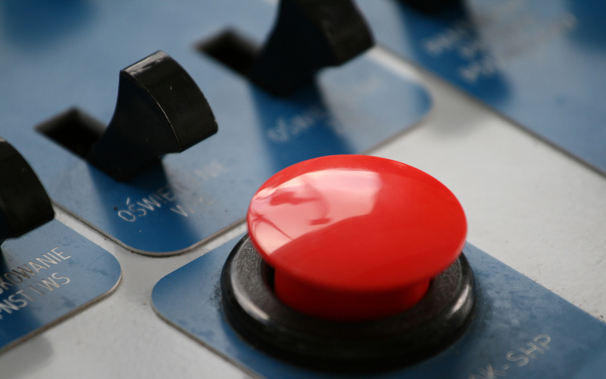
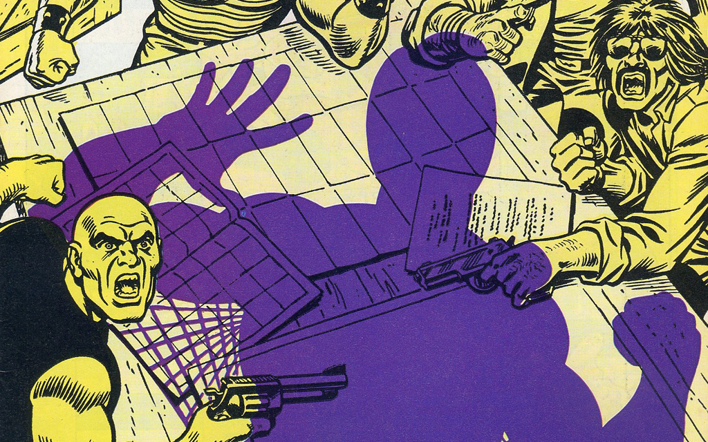
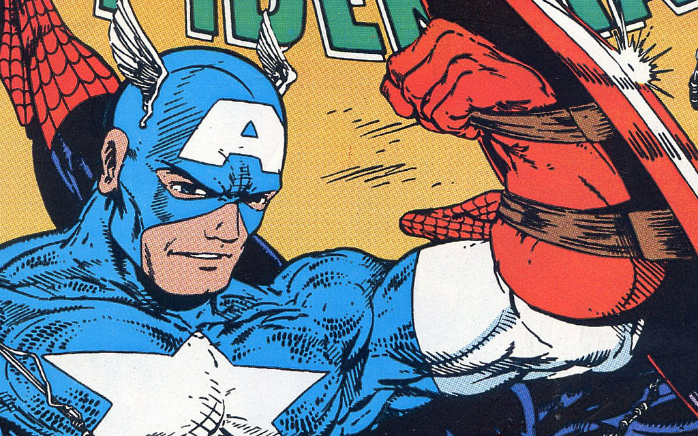
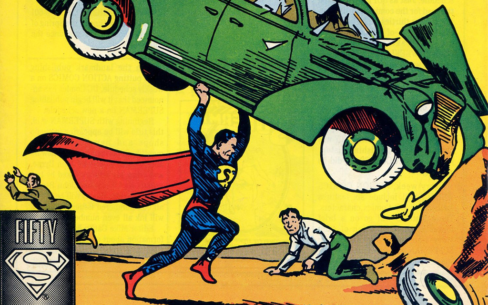
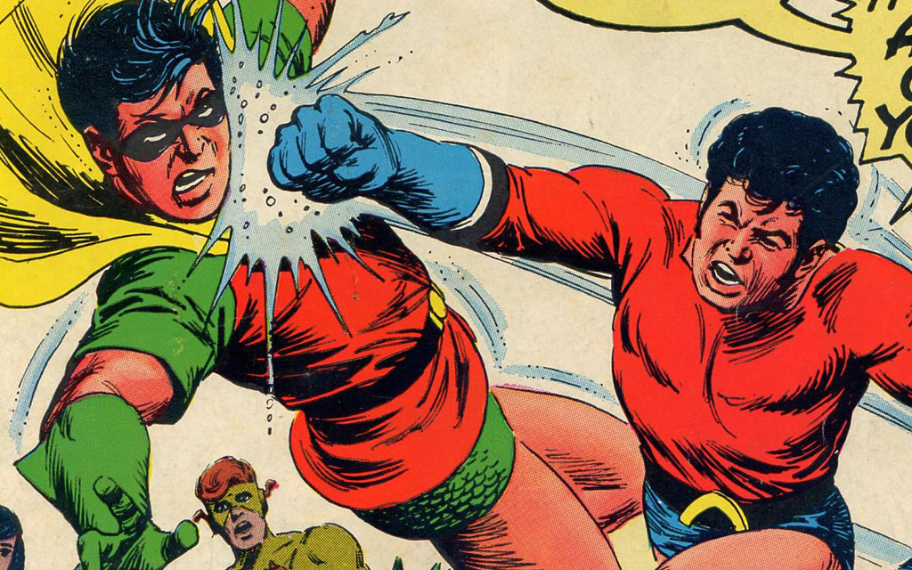
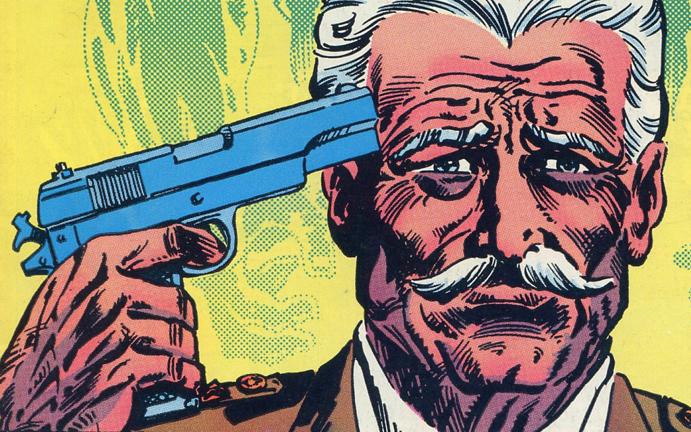
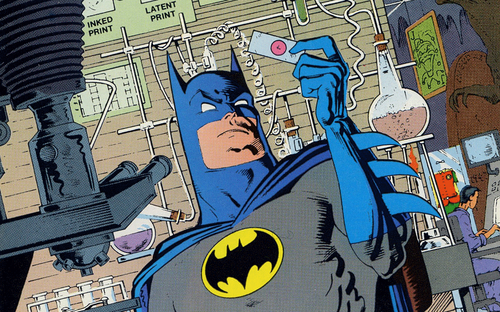
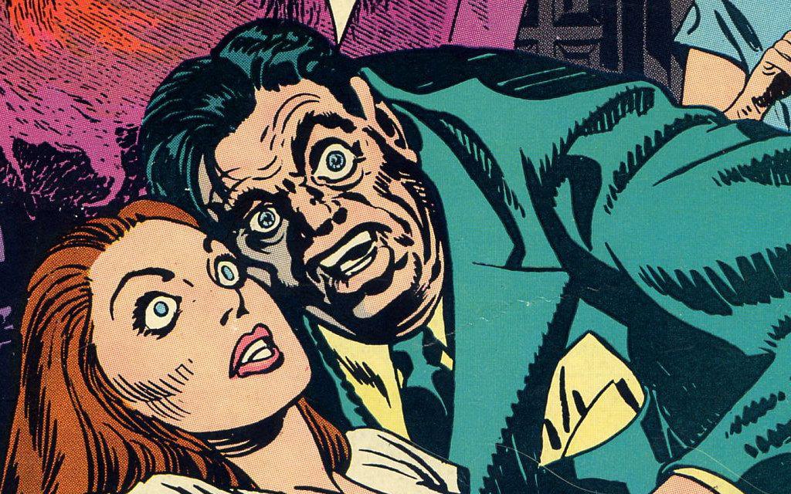
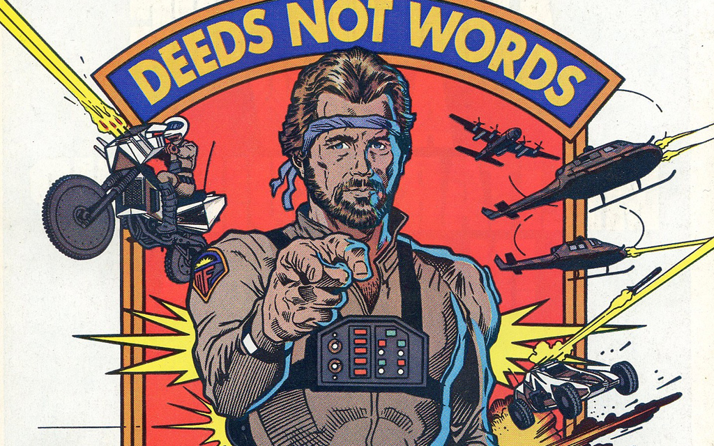

Кнопка, ссылка, псевдоссылка? Как правильно выбрать, сверстать и не наделать глупостей.



<a href="http://…">Ссылка</a>
Главное — адрес
<ul><li><a href="/">Главная</a></li><li><a>Каталог</a></li><li><a href="/about/">О компании</a></li></ul>
Чисто логическая ссылка, без адреса
Если у ссылки нет адреса, внутреннего, внешнего или логического, то это не ссылка, т.е. не <a href=""> и даже не <a>
Ведь пользователь может…
Когда ссылка — ссылка
<a href="#anchor">Псевдоссылка</a>
Но это не обязательно ссылка…
<span class="pseudo-link">Псевдонессылка</span>
Существует договорённость…
.pseudo-link {border-bottom:1px dotted;}
dotted выглядит чище, чем dashed<input type="submit" value="Кнопка"><input type="button" value="Кнопка"><input type="image" src="…">
cursor:pointer совсем не нужноThe button element represents a button.
The element is a button.
<button type="button">Кнопка</button><button type="submit">Кнопка</button><button type="reset">Кнопка</button>
Универсальный элемент для использования вне форм

Сделай-ка мне, чтобы по ссылке так дыщ! и выплывало…

<a href="#" onclick="fire()">Бах!</a>
Берём, значит, ссылку и вешаем обработчик
<a href="javascript:fire()">Бдум!</a>
Можно задействовать пустой атрибут
<a href="javascript:void(0)" onclick="fire()">Ды-дыщ!</a>
Или даже всё сразу!


<span class="b-link b-link_pseudo_yes i-bem"onclick="return {"b-link":{}}"><span class="b-link__inner">ещё</span></span>
С виду правильно, но есть настоящая ссылка «Все сервисы»
<a href="http://www.google.ru/intl/ru/options/"onclick="gbar.tg(event,this)" aria-haspopup="true"><span id="gbztms1">Ещё</span></a>
Всё очень правильно, есть даже ARIA для выпадушки
<a class="rhcFooterSelectorButton"href="#" aria-haspopup="true" aria-expanded="false"aria-owns="u5urfy_47" aria-controls="js_5">Ещё<i class="img sp_4yc81c sx_3f849e"></i></a>
Решётка, то есть, простите, диез…
<a href="javascript:void(0);" class="mlr-psd_lnk"><u id="mailru-webagent">Показать все поля</u><i class="mr_arrow"><b></b></i></a>
Void!
<a data-action="mailbox.check"><img class="b-ico b-ico_check-mail" src="…"><span class="b-toolbar__item__label">Проверить</span><span class="b-toolbar__item__selected …</a>
Сссылка-нессылка
<div class="T-I J-J5-Ji nu T-I-ax7 L3" role="button"tabindex="0" style="-webkit-user-select:none"aria-label="Refresh" data-tooltip="Refresh"><div class="asa"><span class="J-J5-Ji ask"> </span></div></div>
<input type="submit"class="b-mail-button__button" tabindex="10">
Всё хорошо
<a class="button-a js-send" tabindex="1"href="#" role="submit" title="Ctrl+Enter"id="mailru-webagent-gen-35">Отправить</a>
Дали в руки якоря…
<div id=":ga" class="T-I J-J5-Ji Bq nS T-I-KE L3"role="button" tabindex="2"style="-webkit-user-select:none"><b style="-webkit-user-select:none">Send</b></div>
Грубо и прямо
<button id="send_post"onclick="wall.sendPost()">Отправить</button><span class="post_like_link fl_l"id="like_link4483_747">Мне нравится</span>
<a class="fl_r pv_close_link"onclick="Photoview.hide(0)">Закрыть</a>
<a href="#" class="tweet-button btn">Твитнуть</a>
<a href="#" class="with-icn js-toggle-rt"><span class="undo-retweet" title="Отменить ретвит">Ретвиты</span><span class="retweet" title="Ретвитнуть">Ретвитнуть</span></b></a>


Вадим Макеев, Opera Software
Презентация: pepelsbey.net/pres/push-it